The Prototype Builder: Documentation
part of the ArsDigita Community System
by Rebecca Frankel
The Files that make up this Module and where They Go.
What is the Prototype Builder?
Often a web service will require a fair number of pages whose form
and function are nearly identical. The first step of building a web
service usually involves writing web pages to make
it possible for the user to enter data into database table and pull it
out again. These pages for adding and editing data in tables are very
similar and writing them over and over can become tedious. Thus I have
built a tool for automatically generating code for these kind of
pages. The pages generated are meant to be "prototype" pages; it is
expected that they will be modified before the service is
complete. However, this tool makes it possible to quickly build the
framework of a service so one can have a servicable prototype built as
fast as possible.
How to use the Prototype Builder: The Short Story
The goal of the prototype builder is to make it possible to
quickly build an add or edit form for a table. To specify how
one wants an add or edit form to behave requires four
kinds of information:
- The text on the add and edit page: the titles, headers, and the
prompt text for the forms.
- Whether there are any columns for
which data will need to be inserted into the database without user
form input: such columns include an integer primary key, the creation
date, and the creation user. The program can generate these kinds of
data for itself if it is told into which columns they should go. Also
the program needs to know in which column to look for a name for the
object, in order to generate a list page.
- What kind of forms that
are desired and information to configurate the forms.
- Error
handling information: what the program should do if the user fails to
enter any input in the forms.
In order to keep the interface as clean as possible, the prototype
builder collects the information it needs on three successive
pages. The first page asks for the table for which the pages should be
built, and the base filename for the code that should be returned.
(For example, if I choose books as my base filename, I will in
the end be offered the code for the files books-list.tcl,
books-add.tcl, books-add-2.tcl, books-edit.tcl,
and books-edit-2.tcl.) The second page asks for general
information in each of the three categories above, while the third
page allows us to refine these choices. On the second page we are
allowed to choose the text for page headers, to identify any special
columns (like primary key, as discussed above), to choose what kind of
form we will want for input into a column, and to choose what kind of
action we wishes to be taken if the user fails to provide any input
to a column. On the third page we are asked to refine this information
based on the choices made on the previous page. Suppose we chose, for
instance, that input to the comments column should be made via
textarea, and that an error should be returned if the user fails to
provide any input. Then the third page will ask you to specify a prompt
text for textarea, the size you wish for your textarea, and the
text of an error message to return when the textarea is left blank.
When we have hit the submit button on the third page, then we are
offered a page showing how the list and add pages will look given the
specifications one has entered. Also each listed item is a link to a
demonstration edit page. Neither the add or the edit page are
functional; they are just there to let us check that we like the
choices we has made. If everything is satisfactory, then we may choose
one of the links at the bottom of the add page to get the code to
generate the pages. We are offered a choice to view the code (if we
want to see whether it is what we want) or to save it in the specified
directory. If we choose to save it, we are given a message at the top
of the code page saying whether the save was successful, or what error
was returned. If an error is returned then you may try to fix the
error or change the directory, and try again. Notice that if the
error is "Permission Denied" then the problem is that the the user
"nsadmin" does not have write permission to that directory. Also note
that the system will not save over an existing file (its safer that way)
so if you want to change a file you have already saved, you need to delete
the old version.
How to use the Prototype Builder: The Long Story
To make this explaination clearer, I wish to illustrate this process
by working through an example. Suppose we have a large collection of
penguins and wishes to keep a record of all our penguins in the
database. (OK, I admit this is a silly example but makes a fine
demonstration). First we create a data model:
create table penguins (
penguin_id integer primary key,
penguin_name varchar(50),
date_acquired date,
made_of char(20) default 'fuzzy cloth' check (made_of in
('fuzzy cloth','plain cloth','wood','glass','ceramic','plastic','other')),
-- is this a Linux penguin?
tux_p char(1) default 'f' check(tux_p in ('t','f')),
description varchar(700),
date_entered date,
entered_by references users
);
create sequence penguin_seq
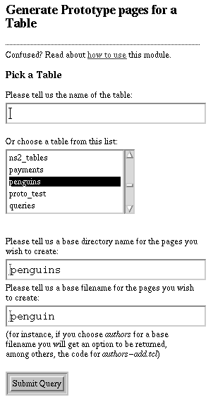
This is a reasonable collection of data to store about a penguin
collection. Actually, I chose the columns to produce a range of types
so I could demonstrate how they all worked. I have no idea if one
would want to store anything like this about a penguin
collection. However, there are some things to note about this data
model. I have chosen an integer primary key and made an associated
sequence, since the prototype builder can build better pages (with
double-click protection and other nice features) when it has these
things.
The First Page
Here we see an image of the first page of the prototype builder. The
first step of building the penguin application is to choose the table
we have created above: 'penguins'. We also need to choose the base
directoryname and filename. The directoryname tells the system where
you wish code to be save (note that you will have an option to change it later
too). The base file name tells the system how to prefix all the code it
generates. Here we have chosen penguin as a basefile name:
we will be returned files with names like penguin-list.tcl, penguin-add.tcl,
and so on.
After hitting the submit button, we will see...
The Second Page
This is an image of the first section on the second page. It allows
us to tell the program what kind of headers we wish to see on the
generated pages. I refrained from making this section ask for too much
detail because it is easy to edit the headers after getting the code
back, if they aren't exactly the way you like them.
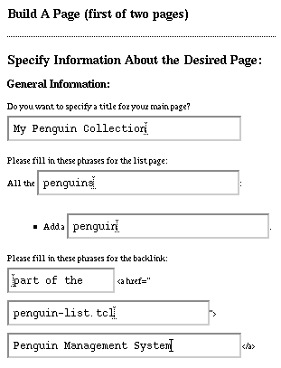
The first textbox asks for the title for the main page. This appears
as a main header for the first page and as a title in the others. The
next two boxes ask us to fill in phrases for the list page. when I
built this, I was hoping I would get from the user the singular and
plural form of the object that he or she is concerned about. I use
this data all over the system to fill in headings like "Edit the
singular form of object" or "View all the plural form of
object". The plural of my object is penguins and the
singular is penguin, so that's what I typed these in
these boxes.
The Arsdigita Community System has a sensible convention of always
including a link to the homepage of a module directly below the
main heading of any page. In order to comply with this convention,
the prototype builder asks for some phrases to allow it to
build this kind of backlink on every page. We needs to fill
in the filename of the homepage (in this case penguin-list.tcl,
though it usually is index.tcl) and the name of the module
(in this case "Penguin Management System"). There is also a phrase which
introduces the module-name link; it defaults to "part of the" and I didn't
chose to edit it.
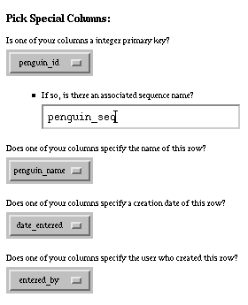
Special Columns
The next section on the second page asks the user
to choose whether there are any special columns in the
database table. There are two purposes to this section:
First, the system must have a key and name for every
object; if you don't enter those here, it will ask for them
again on the next page. Second, there are columns for which
the program can generate values without having to ask
the user for input. For instance, the creation date of an
object can be generated on the insert page at the time
of the insert without having to ask the user to enter it.
In fact, it is better not to ask the user to
enter it because he or she might get it wrong! Similarly, the id of
the user creating the object, or an integer primary key,
can be discovered automatically, and requesting this data
would confuse the user and risk that he or she would enter
a wrong answer. Therefore, the prototype builder asks for
these columns to be identified here, and one need do nothing
more for them to be properly taken care of. In fact, with
the exception of the object's name, it is important to
remember to let these columns alone for the rest of the page.
Choosing Form Types
Next we are given the opportunity to choose which kind of form we
wishe for entry into each column. Below we see the section of this
page as it appears for our penguin collection data model. (I have
increased the size of the font slightly because otherwise it is too
hard to see which boxes are checked.) For every column there is a row
of radiobuttons which we can use to choose a form type for entry into
that column. It is important to note that one does not have to choose
a form type; any column which is left with the choice "none" will just be
ignored when building forms and will be
unavaliable for user input. Often, as I pointed out above, we might
want this situation; there are columns you do not want the user to
have access to. In this example, the penguin_id,
date_entered, and entered_by columns are
in this catagory; we want the user not to have access to them, so
we leave them with the "none" option selected.
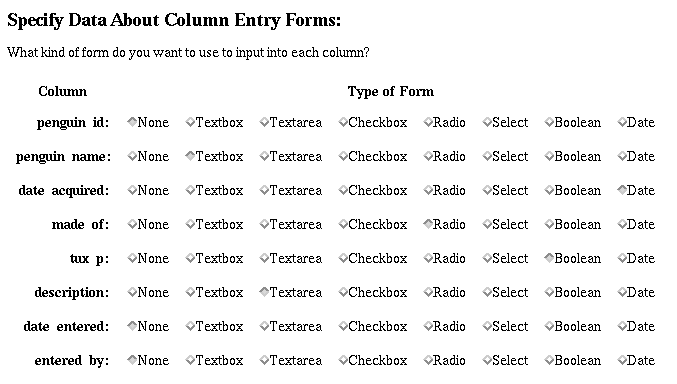
For the rest of the
columns I have chosen appropriate form types. The columns,
tux_p and date_acquired, whose Oracle
datatype were boolean and date, obviously should get those form types
chosen for them.
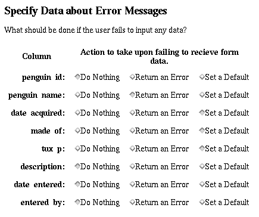
For the shorter text column penguin_name I choose
textbox, and for the longer one description I choose textarea.
This leaves made_of, which, since it consists of a list
of values amoung which the user should select, should be either a
radiobutton or selectbox. For demonstration purposes I choose radiobutton,
though ordinarily I would probably choose selectbox.
Choosing Error Types
The next section of the second page allows us to choose what kind of
action to take if the user fails to enter input for a form. In this
example, there is only one column for which we must badger the user to
enter data: the penguin_name. We must demand this column
because we chose it earlier in the 'special columns' section as the
name of the object, and thus it will be used on the list page to
identify the object to the user. The user would not wish to see an
empty string in that listing. There are some other columns for which
I decided to set defaults, mostly for demonstration purposes. I could
imagine, for instance, that a large part of the penguin collection was
aquired at a certain date (a wedding shower?) and thus the user would
wish that date as the default acquisition date. One could also
imagine that most of the penguins are made of a certain kind of
material; perhaps most of them are plush fuzzy dolls, and thus we wish
to set "fuzzy cloth" as the default material. One could also imagine
that the Tux dolls are in the minority, and thus one would wish a default
of 'false' for tux_p
Again, it is important to note that we do not need to set an error
action for every column. In fact, there are columns for which one
should not. Columns for which one did not choose a form
probably should not get an error action. Special columns like the
primary key, creation date and creation user in particular should be
left alone for the program to handle. Also there are columns like the
description column which are not important enough to
harass the user about filling, and for which a null value in the
database is perfectly acceptible.
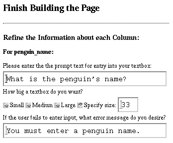
We have reached the bottom of the second page.
After hitting the submit button, one will see...
The Third Page
At the right we see the top of the third page
as it appears in our example. The third page
asks for more information about every column
for which we requested action be taken. The
first column listed is penguin_name.
Since we chose textbox as the form type, we are asked
questions specific to textboxes. We are asked to enter
some prompt text to introduce the textbox, and we are
asked to choose how large we want it to be. Usually
it is best to choose one of Small, Medium or Large, so
that textboxes will be standard sizes throughout the
application. However, in this case I wanted to make my textbox
extra small to fit in the margins of this document, so
I chose to specify a custom size. Since we chose to
ask the program to complain if the user fails to enter
input, the program asks us here for an error message to
show the user. This error message will be wrapped in
the standard text from ad_return_complaint, so if
an error actually occurs the full text will be:
We had a problem processing your entry:
You must enter a penguin name.
Please back up and resubmit your entry.
It is useful to keep this context in mind when composing
error messages.
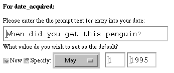
Next the third page asks us for more information about the form for
entry into date_acquired. We chose the form type to be
date, with a default value specified, and thus this page asks us for a
prompt text and a default date. I shall suppose that the magic date
which was the start of the bulk of the penguin collection was May 1,
1995, and thus I enter it here. Notice that one can also set the
default date to be "Now," which means the default will be set to be
whatever moment that the user chooses to look at the add
page. However, I should mention that if you choose to set no default,
the page will behave the same as if you had chosen this default. As it
were, "Now" is the default by default, and thus there is little point
to go out of one's way to specify it.
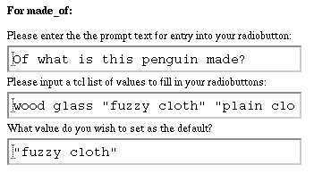
Furthur down the third page, we see a request for furthur information about
the form entry into made_of. We had chosen "radiobutton" for
this column, but this section would look the same if we had chosen
radiobutton, select or checkbox. We are asked for a tcl list of values
from which the program can generate radiobuttons. Notice that if
we want more than one word to belong to one radiobutton label, we
have to enclose it in quotes, following the grouping convention of
tcl lists. Then we can chose one of the entries of this list
to be specified as the default value for our radiobutton variable.
This entry will be checked by default on the add page. If this
were a checkbox instead of a radiobutton we could choose more
than one element of the list to be checked by default.
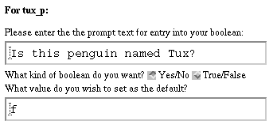
I have supposed that a large part of this penguin
collection is made up of Tux dolls, and thus the owner might want to
keep a record of whether this penguin represents the Linux mascot.
Therefore we have requested an entry into the boolean
tux_p. For a boolean one is given a choice of whether
one wishes it to be displayed Yes/No or True/False. Given the question
I chose as my prompt text, Yes/No is the right choice here. However,
when specifying the default, one should remember that booleans are
represented in the database as 't' and 'f', and choose one of these
letters as the default. (I should improve this interface; it is this
way because booleans are handled as a special case of radiobuttons.)
Since I am assuming that Tux dolls do not make up the majority of the
collection, I choose 'f', for false, as the default.
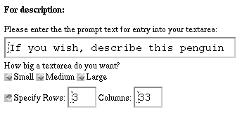
Finally, we come to the last column for which we have requested
a form entry, description. We requested a textarea
for this column. Textareas are handled very similarly to textboxes:
the only difference is that we get to choose both the rows and
columns if we choose to specify the size. Again, since I want
my textarea to fit comfortably in the margin of this document,
I choose a small width and height.
So we have come to the bottom of the third page, and
entered all the data we need to specify our prototype pages.
We hit submit and see the fruit of our labors...
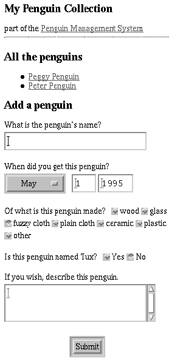
The Preview Page
The next page we see is intended to show us how the choices we have
made will look. You can see at the left the results of the entries we
have made. We have a title and backlink for our page, as we specified.
We have a list of all the penguins in the database (I entered some
earlier), listed by their names. We have a small textbox for entering
the name of a new penguin. We have a date widget with our chosen
default date filled in. We have a radio button list of material
choices with "fuzzy cloth" set as the default. We have a boolean
selector for the Tux question with "No" set as the default. Finally we
have a small textarea in which to enter a furthur description of the
penguin. At this point we can review our choices and decide if we are
happy with them. If not, it is easy to go back and change anything we
do not like.
However, even after adjustment there may still be some dissatisfying
aspects of the formatting or functioning of the preview page which one
might wish to change and cannot. For instance, one might not like the
layout of the radiobuttons which list the materials (they are pretty
ugly). Unfortunately, nothing on the previous pages will reconfigure this
aspect of the page. This is why this is only the preview
page, and the main goal of this module is not to produce a page like
this, but to produce the code that generates it. One cannot hope
to produce enough configuration paramaters to generate pages that would
please everyone in every circumstance. However, if one offers the
code for these pages, it is good enough to get reasonably close to
what people want, and allow them to edit the code to get the rest of the
way. So, for instance, if you want your radiobuttons grouped in
threes, or sorted by descending order by wordlength, or whatever you
wish to make them pretty in your eyes, by far the easiest thing is
to pick up the code using the buttons at the bottom of the page, and
start editing.
 Currently the buttons at the bottom of the preview page
offer links to the code to five different pages: a list page,
that will look much like the top part of the preview page; an add
page, that will look like the bottom part of the preview page;
an edit page, that will look like the bottom part but with
value from the database filled in; and insert pages for the add
and edit pages.
Currently the buttons at the bottom of the preview page
offer links to the code to five different pages: a list page,
that will look much like the top part of the preview page; an add
page, that will look like the bottom part of the preview page;
an edit page, that will look like the bottom part but with
value from the database filled in; and insert pages for the add
and edit pages.
If you click through any of these buttons, you will see a window with
the code displayed. When I designed this system, I intended for the
user to be able to use the Save As... button to save the code to
wherever he or she wished. In addition, I added the option to save the
code directly from the web server. If you choose the "Save code"
button, the system will attempt to save the code for you in the
directory specified, and will leave message at the top of the code
page saying whether or not the attempt was successful. If the
code-saving attempt fails, it will list the error message generated by
the system.
There are some standard reasons why code-saving would
fail. First, if you include ".." anywhere in the name, it will fail
for security reasons. Second, I decided it should refuse to save over
existing code, out of a similar sense of caution. So if you hit the
"Save" button twice, the save will fail the second time. You have to
delete or move the generated code for the save to work again. Thirdly,
unless your directory has write permission for the "nsadmin" user, you
will get "Permission Denied." The best fix for this problem is to add
nsadmin to your group and make your directories group-writable. However if you don't have the option to change the
groups in your system, then you have to make at least one directory
world-writable. I made a world-writable code/ directory and always save
my code there, and then later move it to where I want it to be.
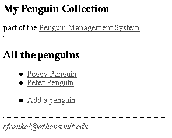
However the code is saved, remember that it important to save it under
the filename it claims it should be. If you are desperately unhappy
with this name, you can go back and change the base filename. If even
this cannot make you happy, you can change the filename in the code,
but remember that the list page links to the edit page, and the edit
page will call the edit-2 page, and so on, so you have to be careful
to change filenames every place they appear.
Now suppose we have managed to succesfully save our code under the
appropriate names. We are ready to enjoy our working Penguin
Management System. We visit penguin-list.tcl with our browser and
see...
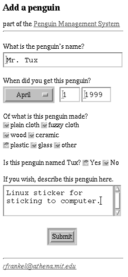
The Working Penguin Management System
At the right we see how the
list page of our Penguin Management
System looks.
Since there are no other
tables this becomes the front page as well
(in a larger system in would probably be linked
from the real front page). I have already added
two penguins in the system, and each of them
is a link to an edit page which allows us to
edit their data.
Recently some friends of mine offered to sell me some Linux stickers
to stick on top of offending logos on my computer, of, well, shall we
say, other vendors. Suppose these stickers feature the Linux penguin,
so they count as a new addition to my penguin collection. Therefore I
can use the link to "Add a penguin." to record this new addition to my
collection.
At the left we see the add page that resulted when I followed the
link. I edited the code a little to improve the formatting. The
aforementioned offending radiobuttons look better now. I have filled
in the values to record my Linux sticker in the database. I assume a
sticker made of plastic counts as a plastic penguin, and I fill
in the date of April Fools Day. I also include a short description
because this is rather strange addition to a penguin collection.
After
submitting this data (where it is handled invisibly by
penguin-add-2.tcl), I return to the list page, where I see I now have a
new penguin in the database:
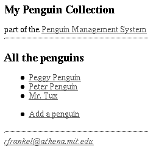
Each of the names on the list page is a link to a page where
the values in the database can be edited. Thus,
I can check the whether the values for "Mr. Tux" were successfully
entered into the database by selecting his name. We are shown
the edit page for the entry associated with "Mr.Tux" (seen below). The values seem to be the ones we entered. They are
filled into forms so they could be further edited. If we want
to change anything we can do so and press submit on this page
to feed the change into the database.
Known Bugs and Missing Features
Known Bugs
This system has been thoroughly tested only in the situation
where the table has an integer primary key with an associated
sequence. Any other case may not insert the primary key properly
in the database and certainly will not produce double-click
protection for the Add page.
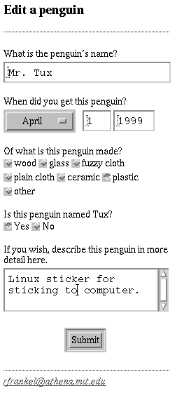
Variables are passed between pages using their column names. This may
cause problems if a programmer adds a call to
set_variables_after_query and it overwrites the values passed from the
forms. I am not sure what to do about this; calling the variable
anything other than their column names makes them hard to keep track
of.
Checkboxes are not appropriately filled in on the edit pages
if more than one of them is checked. I used bt_mergepiece to fill them
in, and I do not know why it isn't working right. In general,
checkboxes are the least-well tested of the form-types, because they
are rare and have strange properties. So if you use checkboxes, check
your code to make sure it is doing what you want.
Missing Features
The largest glaring assumption this system makes is that the
table chosen is a simple primary-key table. Many tables
are keyed by two identification numbers that reference other
tables. The ability to handle such tables gracefullly is the
biggest capability needed to make this tool able to automatically build
systems more complex than our (very simplistic) Penguin Management
System.
Another often used feature missing from this system is the
ability to fill in a select, checkbox or radiobutton from
values pulled from another table in the system. For instance,
in my Penguin Management System, I might have had another table
listing materials of which penguins might be made, and I would
want the page to find this list from the database, rather than
always using a pre-specified list.
Both these features would be hard to add without correcting a deeper
weakness of this system. This system does not store data in the
database as it builds pages, and its "data model" is entirely built
out of variables passed between HTML pages. This kind of data
structure has reached (or perhaps passed) the limit of the complexity
it can handle. I really need to build a meta-data data model and
rewrite all the pages so they rely on the data they get from the
database rather than on data passed through hidden forms from page to
page.
There should be a feature to enable "sort by" links on the
list page. This is simple to add; however I am not quite sure how to
structure the configuration of such an option.
Another major feature that might be useful, but I do not even
begin to understand how to structure, would be some way to deal
with objects that require permissions or approval for their
creation. I do not know well enough the standard patterns for
permission and approval generation to know if or how it could
be incorporated into a system like this.
rfrankel@athena.mit.edu